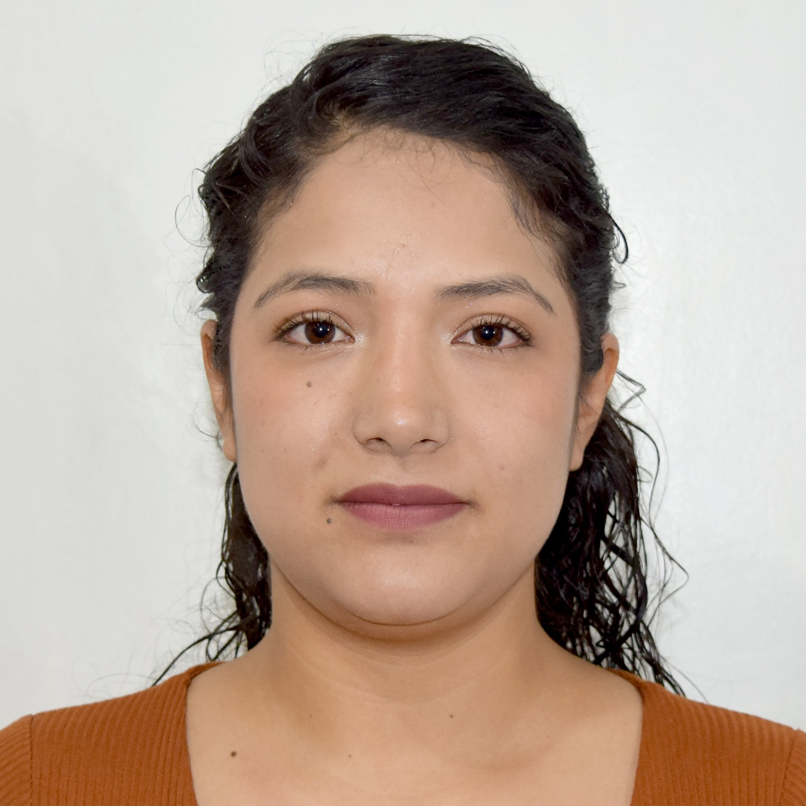
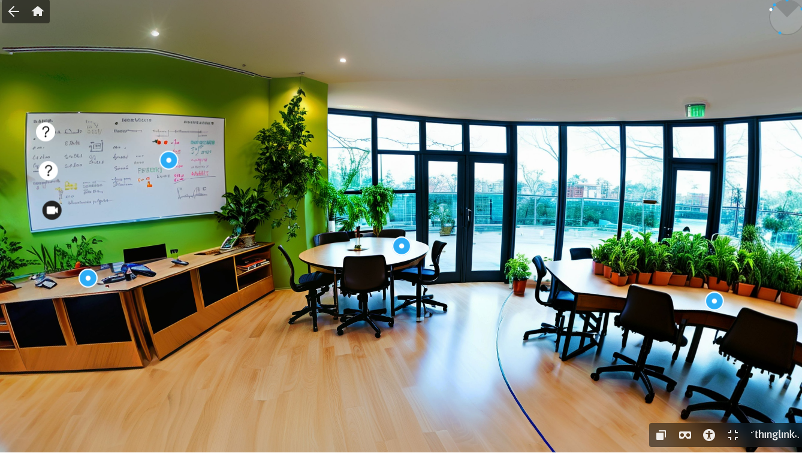

Un espacio académico que documenta y reflexiona sobre el uso de tecnologías emergentes en la educación superior — aula invertida, realidad aumentada, inteligencia artificial y más.
Quiénes somos
Estudiantes de la Maestría en Educación, Mención en Docencia e Investigación en Educación Superior · UNEMI

"Integrar lo presencial y lo digital no es una opción educativa; es una responsabilidad pedagógica que el docente del siglo XXI debe asumir con convicción, creatividad y rigor académico."
— UNESCO, 2022 · Reimagining our futures together: a new social contract for education
Marco conceptual
Un modelo pedagógico que integra sistemáticamente la instrucción presencial con el aprendizaje mediado por tecnología digital.
La educación híbrida —también denominada blended learning— es un modelo que combina de forma intencional y estructurada la enseñanza cara a cara con actividades de aprendizaje en línea. No se trata de una simple superposición de modalidades, sino de un rediseño profundo de la experiencia educativa.
Según Garrison y Kanuka (2004), el modelo híbrido "combina la comunicación oral cara a cara con la comunicación asincrónica mediada por tecnología, de manera coherente y deliberada". Esto implica repensar roles docentes, entornos y estrategias de evaluación.
En educación superior, el modelo híbrido representa una oportunidad para democratizar el acceso al conocimiento, personalizar el aprendizaje y preparar a los estudiantes para entornos laborales cada vez más digitales e interconectados.
Modelos de implementación
Proyecto aulario
Tres proyectos que integran metodologías activas y tecnologías emergentes en el diseño de experiencias de aprendizaje híbrido.
Diseñamos una clase virtual bajo el modelo de Aula Invertida (Flipped Classroom), en la que los estudiantes acceden previamente a contenidos multimedia —videos, lecturas y recursos digitales— para profundizar y aplicar el conocimiento durante la sesión sincrónica. El modelo permite que el tiempo de clase se destine a actividades de mayor demanda cognitiva: debate, resolución de problemas y co-creación.
El proceso de diseño nos confrontó con la necesidad de repensar el rol del docente: de transmisor de información a diseñador de experiencias de aprendizaje. El verdadero reto del aula invertida no es técnico sino pedagógico — implica confiar en el estudiante como agente activo de su propia formación y estructurar el tiempo sincrónico con intención didáctica clara.
Desarrollamos un entorno inmersivo utilizando herramientas de Realidad Virtual (VR), orientado a enriquecer la experiencia de aprendizaje mediante la visualización e interacción con contenidos tridimensionales. Este entorno permite explorar conceptos de manera experiencial, superando las limitaciones del aula física convencional.
Las tecnologías inmersivas favorecen el aprendizaje experiencial (Kolb, 1984), especialmente en disciplinas donde la visualización tridimensional o la simulación de contextos reales representa una ventaja pedagógica significativa. La creación del entorno nos permitió comprender que la tecnología es el medio, no el fin — el diseño instruccional debe preceder a la elección tecnológica.

Diseñamos un chatbot educativo en Landbot destinado a orientar estudiantes, resolver preguntas frecuentes y tutorizar conceptos clave de la asignatura. El chatbot actúa como asistente pedagógico disponible las 24 horas, reduciendo la dependencia de la atención sincrónica del docente y promoviendo la autonomía del estudiante en su proceso de aprendizaje.
La creación del chatbot nos confrontó con la necesidad de anticipar las dudas estudiantiles y estructurar el conocimiento en flujos conversacionales lógicos. Comprendimos que la IA conversacional es una extensión del diseño instruccional, no un sustituto del docente — el valor pedagógico reside en la calidad del diseño, no en la tecnología misma.
Recursos complementarios
Una selección curada de recursos para profundizar en el diseño de clases híbridas, tecnologías inmersivas y asistentes conversacionales.
Plataformas y aplicaciones para diseñar, gestionar y enriquecer experiencias de aprendizaje híbrido.
Guías paso a paso para trabajar con las tecnologías del módulo Realidades Híbridas.
Presentación elaborada por el grupo sobre el panorama actual de la educación híbrida.
Bibliografía académica
Reflexión final
Cada integrante del grupo comparte su reflexión personal sobre los aprendizajes del módulo, el impacto de la educación híbrida y el rol de la inteligencia artificial en la educación.
"La tecnología no transforma la educación. La transforma el docente que sabe usarla con propósito pedagógico."
Grupo de investigación · Maestría en Educación · UNEMI · 2026